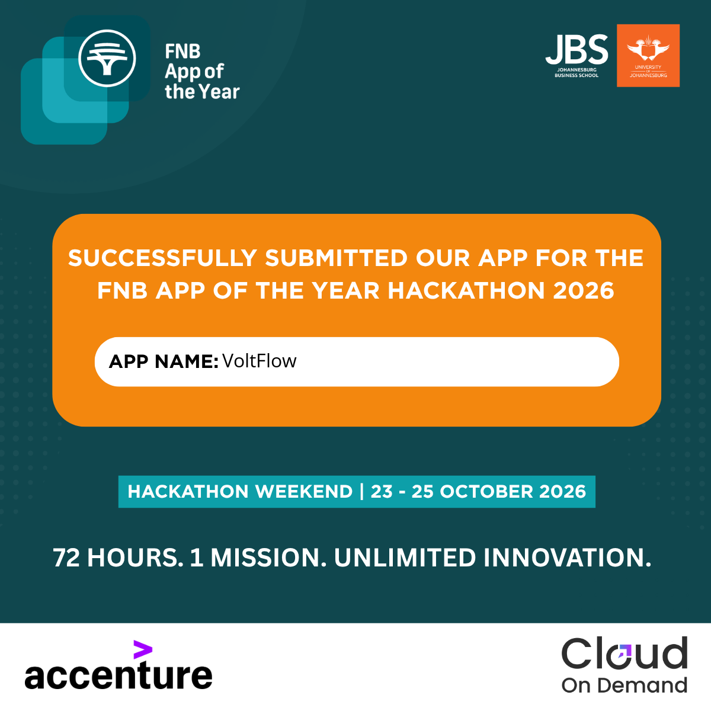
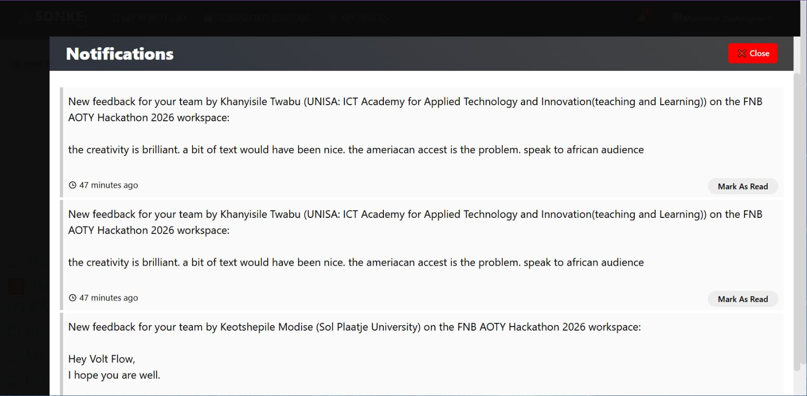

One mission, 72 hours
VoltFlow took part in the FNB App of the Year (AOTY) Hackathon 2026, whose hackathon weekend ran from October 23 to 25. We submitted VoltFlow through the Sonkhe platform, sharing our electronics design workspace with the hackathon community.
VoltFlow brings circuit planning, embedded code and simulation together in one place. Taking part gave us an opportunity to present the app, share what we are building and learn from feedback from people across the South African technology community.

Feedback that helps us build for our audience
After the hackathon, feedback on Sonkhe praised VoltFlow’s creativity and encouraged us to make the experience more welcoming to African audiences, including reviewing its voice and adding more explanatory text. That is useful direction as we continue improving how we introduce and explain the app.

Thank you to everyone who took the time to explore VoltFlow and share thoughtful feedback. The hackathon submission is one milestone; listening and continuing to improve the experience is part of the work that follows.
Back to all articles